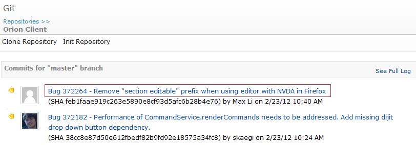
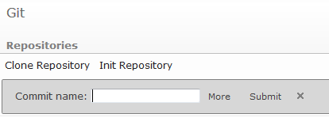
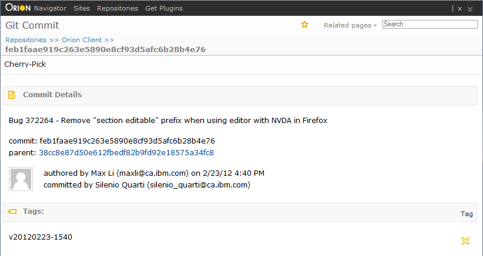
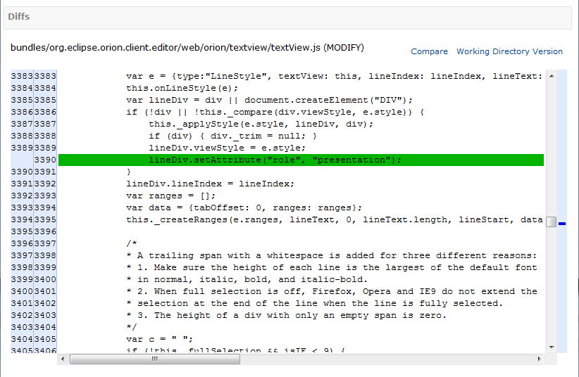

The Git Commit page allows you to see a detailed description of a single Git commit. This page includes all the usual Git commit details and shows in-line comparisons for commit changes. The title area indicates the repository you are currently viewing. You can also perform operations on commits from this page, such as tagging and cherry-picking the commit into your current active branch.
To open the Git Commit page, click on any commit summary in the Git Log, Git Status, or Repositories page.

You may also use the Open Commit command (Ctrl+Shift+H) from any Git page, which will open the commit page for the given commit name (sha1).

The Details section includes all the usual Git commit details such as author, committer, summary, and parent commit. In the Tags section there are corresponding tags for the commit and actions to remove or add new ones.

The Diffs section shows an in-line comparison of all the file changes that make up the commit. Click Compare to see a change in the side-by-side compare editor or Working Directory Version to see the current file version in the editor.

This document is maintained in a collaborative wiki. If you wish to update or modify this document please visit http://wiki.eclipse.org/Orion/Documentation/User_Guide/Reference/Git_Commit_page